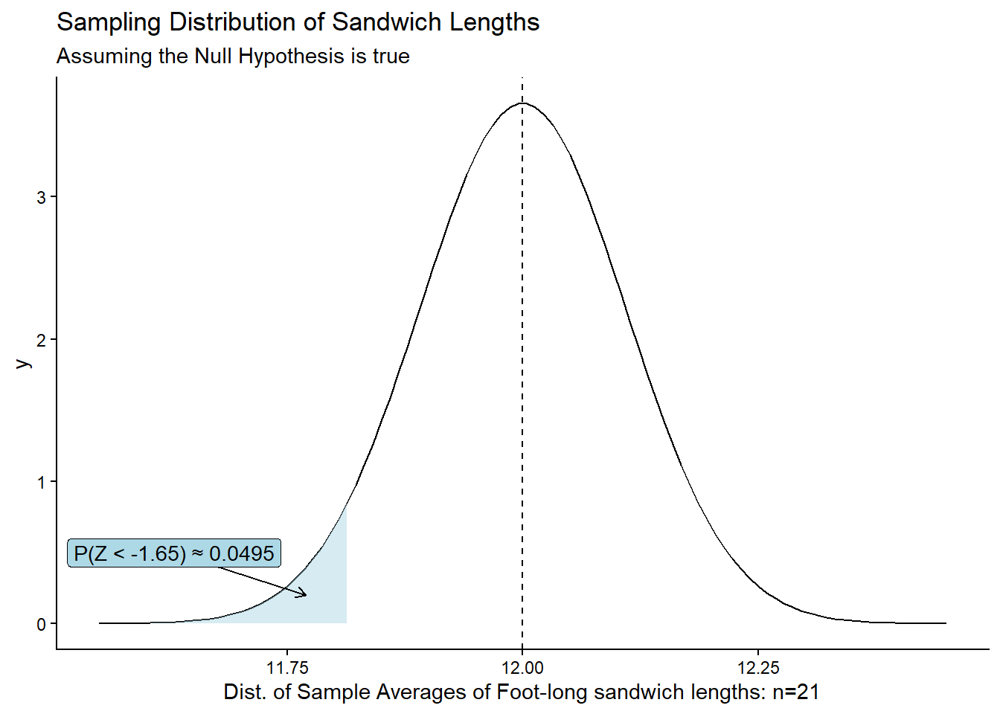

Introducing Hypothesis Tests
Introduction
In this lesson, we explore the components of statistical hypothesis testing in a general way. These general principles will apply to all of the specific tests we will learn about during the rest of the semester.
Lesson Objectives:
- Explain what the null hypothesis, \(H_0\), is and why we use it
- Explain what the alternative hypothesis, \(H_a\), is
- Explain the concept of a test statistic as a “signal-to-noise” ratio
* Explain what is meant by “signal”
* Explain what is meant by “noise”
- Explain the concept of a p-value
Hypothesis Testing
Hypothesis testing is a fundamental concept in statistics that allows us to make inferences about population parameters based on sample data. It’s a structured method for using data to decide between two competing claims about a population.
The Null Hypothesis, \(H_0\)
The null hypothesis is the initial claim or assumption about a population parameter. It often represents the status quo or “no effect”.
For example, we assume that the new medication has no effect until we find enough evidence to prove otherwise.
We write the null hypothesis as ‘\(H_0\)’, and refer to it as “H-Naught” or “H-O”.
Many of the statistical tests we cover in this course follow the generic form:
\[H_0: \text{There is no relationship between }X \text{ and }Y\]
The Alternative Hypothesis, \(H_a\)
We typically engage in scientific inquiry because we do NOT believe the null hypothesis. For example, we believe that there IS an effect of a new medication.
The “burden of proof” is on the researcher to prove the null hypothesis wrong. This means that it is the researcher’s responsibility to present enough evidence to contradict the null hypothesis.
The counter-proposal for the null hypothesis is called the alternative hypothesis.
We write the null hypothesis as ‘\(H_a\)’, and refer to it as “H-A”.
The statistical tests we will cover in the rest of the semester follow the generic form:
\[H_a: \text{There is a relationship between }X \text{ and }Y\]
Visualizing the Null Hypothesis
We always begin a study under the assumption that the null hypothesis is true.
What would a true null hypothesis look like? As we’ve explored data using descriptive statistics, we’ve seen many examples where there is no relationship between x and y.
For example, if there was no relationship between Height and Extroversion, we would expect to see something like:

Because of sample-to-sample variability, the points wouldn’t look exactly like this every time, but it would generally look like random scatter.
If the null hypothesis is true, it would be very unlikely, though possible, to observe a scatter plot like the following, just by chance, because of sample-to-sample variation:

If the null hypothesis is true, it would be ASTRONOMICALLY unlikely, though theoretically possible, to observe a relationship like the following just by chance, because of sample-to-sample variation:

Visualizing \(H_0\) for Group Means
Now consider the situation where you have a categorical explanatory variable and a continuous response variable. Under the null hypothesis that there is no relationship between X and Y, the boxes in a boxplot should all line up to look roughly the same.
Because of sample-to-sample variability, the boxes won’t look identical.
Below is an app that simulates data under the null hypothesis. Any observed difference between boxes is part of the expected variation if there really was no difference at the population level. This shows how group distributions can vary just from sample to sample.
Try it out:
- Pick a sample size and run several simulations by repeatedly clicking the button.
- Repeat for a sample size of 10
- Repear for a sample size of 70
PONDER: What do you notice about the impact of sample size on the sample-to-sample variability?
Statistical hypothesis testing is about calculating the probability of observing what we actually observed IF the null hypothesis were true. If that probability is very small, we can confidently reject the null hypothesis in favor of the alternative.
Next, we look at the process of calculating that probability.
Test Statistic
To calculate the probability of observing what we observed if there really was no relationship, we first calculate a test statistic.
The exact formula for a test statistic depends on what type of analysis is being performed. But regardless of the type of analysis, test statistics follow a general construct.
A test statistic can be though of as a signal-to-noise ratio, where the signal is what we observed in our sample and the noise is the sample-to-sample variability we would expect if the null hypothesis is true.
\[\text{Test Statistics}=\frac{\text{signal}}{\text{noise}}\] Think about this as a fraction.
Answer the following questions:
- What would make \(\frac{signal}{noise}\) big?
Show/Hide Solution
- If the noise was very small
- If the signal was very large
- What would make \(\frac{signal}{noise}\) small?
Show/Hide Solution
- If the noise was very large
- If the signal was very small
As we get into specific analyses, we will look at a few of those formulas, and R will do all the calculations for us. For now, consider a test statistic as a signal-to-noise ratio. The larger it is, the stronger the evidence against the null hypothesis.
But a test statistic is just a number and difficult to interpret in isolation. The calculation of the test statistics is an intermediate step to calculating the probability of observing what we observed if the null hypothesis were true.
Probability
Every test statistic has a probability distribution associated with it. The shape of that distribution depends on context, but the general process is:
- Calculate the test statistic (ratio of our observation to the expected variability under \(H_0\))
- Use the probability distribution of the test statistic to calculate the probability of observing something more extreme than what was observed in our sample if the null hypothesis were true
KEY DEFINITION: A \(P\)-value is the probability of obtaining a result at least as extreme as the observed data, assuming that the null hypothesis is true.
A small p-value means that what we actually observed in our sample is unlikely to have happened just because of sample-to-sample variation.
A large \(P\)-value means that our observation is likely to have occurred if the null hypothesis were true. Our observations are consistent with sample-to-sample variation.
How Long is a Foot-Long Sandwich?
Let’s look at a concrete example.
One might expect a foot-long sandwich to be 12 inches long, at least on average. Consumers will naturally allow for some level of variation. But if enough customers are convinced they are getting consistently short-changed, they may loudly complain, or even attempt a lawsuit.
The Null Hypothesis
In the case of foot-long sandwiches, our null hypothesis is that the true mean length of foot-long sandwiches is 12 inches.
We present the null hypothesis in the following way:
\[H_0: \mu = 12\] This represents the claim we need to DIS-prove. We seek evidence against \(H_0\) in favor of an alternative.
The Alternative Hypothesis
In the case of foot-long sandwiches, customers will typically only get upset if they are getting less than advertised. We would propose an alternative:
\[H_a: \mu < 12\] KEY POINTS:
- Hypotheses are statements about population parameters, typically written with Greek letters
- The null hypothesis will always be a statement of equality
- We never PROVE the null hypothesis is true, we can only fail to disprove it.
That last point is important. Data collected are only evidence against \(H_0\). This is similar to the situation in a courtroom where a defendant is accused of a crime. The defendant does not have to PROVE their innocence. It is up to the prosecution to prove guilt. If they fail to do so, we find the defendant “not guilty”, which is not the same thing as innocent. It just means there wasn’t enough evidence to convict.
Test Statistic
In this example, the signal is how far our observed mean, \(\bar x\), is away from the hypothesized mean, \(\mu=12\).
The noise is the sample-to-sample variation of the mean. Because of the properties of the sampling distribution for a mean, we know the sample-to-sample variation for \(\bar x\) is: \(\sigma_{\bar x} = \frac{\sigma}{\sqrt{n}}\). This is the sample-to-sample variation for sample means.
Suppose for now that sandwich-to-sandwich lengths vary by about 0.5 inches and that the distribution is normal. If we sampled 21 random sandwiches from shops in a region and got a sample mean length of 11.82 inches, we can calculate a test statistic as a signal-to-noise ratio:
SIGNAL: How far away is our sample mean from the hypothesized mean:
\[11.82-12 = -0.18\ \text{in}\]
NOISE: The expected variation of sample means assuming the null hypothesis is true. Based on the properties of the sampling distribution of \(\bar x\), this is:
\[\sigma_\bar{x} = \frac{\sigma}{\sqrt{n}} = \frac{0.5}{\sqrt{21}}=0.109\]
Signal to Noise Ratio:
\[\frac{-0.18}{0.109} = -1.65\]
You may recognize this as a z-score:
\[ z = \frac{\bar{x} - \mu_0}{\sigma / \sqrt{n}} = \frac{11.82 - 12}{0.5 / \sqrt{21}} = -1.649727 \]
In this case, \(z\) IS the test statistic where \(\bar{x}\) is the sample mean, \(\mu_0\) is the null hypothesis mean, \(\sigma\) is the population standard deviation and \(n\) is the sample size.
Based on the results from the formula above, \(\bar{x}\) is about 1.65 standard deviations below the mean.
Because we know that \(Z\) follows a standard normal distribution, we can calculate the probability of getting a test statistic LESS than the one we observed, if the null hypothesis is true.
This probability is the evidence we use to make a decision about the null hypothesis.
\(P\)-value
\(P\)-value: The probability of obtaining a test statistic (such as \(z\)) at least as extreme as the one you calculated, assuming the null hypothesis is true.
In other words, our \(P\)-value is the probability that we would get a \(z\)-score that is as extreme or more extreme than \(z=-1.649727\), assuming the true mean is 12 inches.
We use “as or more extreme” because the direction (greater than or less than) depends on our alternative hypothesis.
In the case against the sandwich shop, we can use pnorm() to get the P-value:
z <- (11.82-12) / (0.5/sqrt(21))
pnorm(z)[1] 0.04949937Conclusion: If the true population mean was 12 inches, there is a 4.95% chance of obtaining a sample mean of 11.82 hours or less for a sample size of 21.
At this point we have to make a decision. Is that probability small enough to reject the null hypothesis in favor the alternative? Are foot-long sandwiches LESS than 12 inches on average?
When the P-value is very small, we have strong evidence to reject the null hypothesis. But how small is small enough?
In the next lesson we will talk more about decision rules for deciding when a p-value is small enough to reject \(H_0\).
Summary
The Process
Every statistical hypothesis test will follow the form:
- State the null and alternative hypotheses and choose the significance level, \(\alpha\)
- Calculate the Test Statistic using your sample data
- Calculate the P-value, the probability of observing the test statistic that we observed (or more extreme) if the null hypothesis were true.
- Make your conclusion by comparing the P-value to \(\alpha\)
- Check the test requirements
The math behind the above calculations will vary depending on context. We will only touch lightly on the underlying math and rely on R to execute it. This class will focus on the application of the above process.
You may not yet understand the terminology above, but we introduce the process now as a roadmap. We will revisit this each time we introduce a new hypothesis test, and before you know it, this will be second nature.
NOTE: This is a new paradigm for most students. It’s perfectly fine to be confused at first. But just as with learning to code in R, we will make sense of this framework for statistical inference.